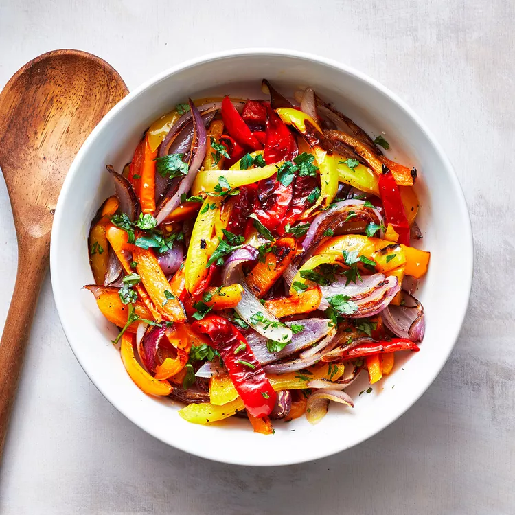

Sautéed Peppers & Onions

Description
- 2 tbsp extra-virgin olive oil
- 4 bell peppers, sliced
- 3 cups of sliced sweet onions
- 1 tsp salt
Steps
- Heat oil in a large sauté pan or Dutch oven over medium heat
- Add peppers, onions and salt
- Cook, stirring occasionally, until the vegetables are tender and starting to brown.
18 to 21 minutes
Return to homepage